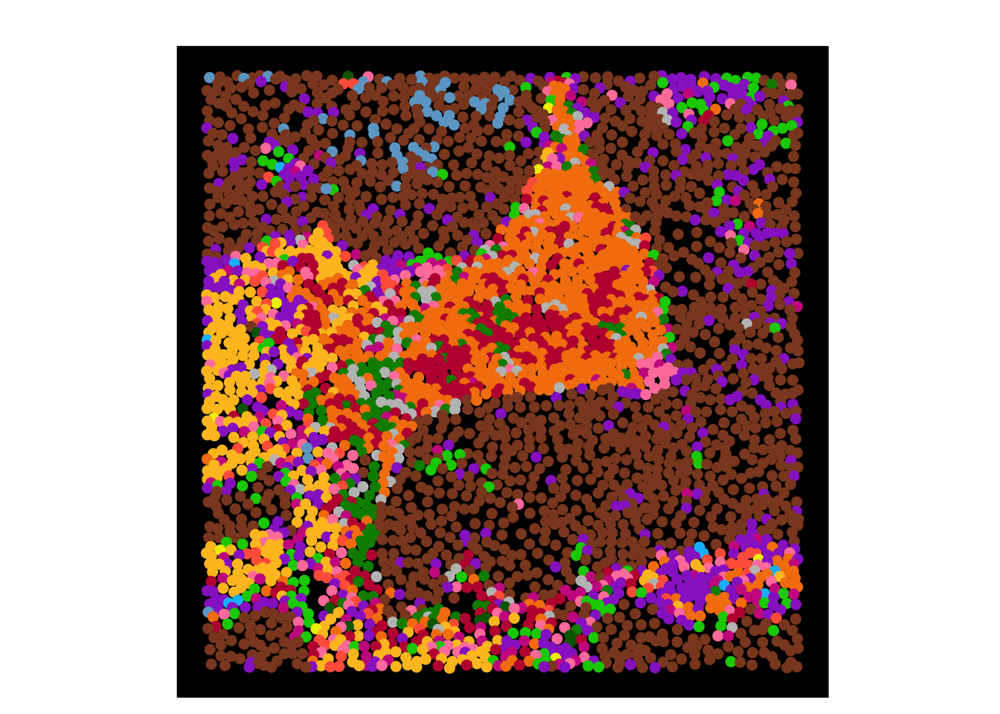

Figure 1
Last updated: 2023-11-15
Checks: 7 0
Knit directory: IMMUcanWorkflow2021/
This reproducible R Markdown analysis was created with workflowr (version 1.7.1). The Checks tab describes the reproducibility checks that were applied when the results were created. The Past versions tab lists the development history.
Great! Since the R Markdown file has been committed to the Git repository, you know the exact version of the code that produced these results.
Great job! The global environment was empty. Objects defined in the global environment can affect the analysis in your R Markdown file in unknown ways. For reproduciblity it’s best to always run the code in an empty environment.
The command set.seed(20231009) was run prior to running
the code in the R Markdown file. Setting a seed ensures that any results
that rely on randomness, e.g. subsampling or permutations, are
reproducible.
Great job! Recording the operating system, R version, and package versions is critical for reproducibility.
Nice! There were no cached chunks for this analysis, so you can be confident that you successfully produced the results during this run.
Great job! Using relative paths to the files within your workflowr project makes it easier to run your code on other machines.
Great! You are using Git for version control. Tracking code development and connecting the code version to the results is critical for reproducibility.
The results in this page were generated with repository version 666d2bb. See the Past versions tab to see a history of the changes made to the R Markdown and HTML files.
Note that you need to be careful to ensure that all relevant files for
the analysis have been committed to Git prior to generating the results
(you can use wflow_publish or
wflow_git_commit). workflowr only checks the R Markdown
file, but you know if there are other scripts or data files that it
depends on. Below is the status of the Git repository when the results
were generated:
Ignored files:
Ignored: .DS_Store
Ignored: .Rproj.user/
Ignored: analysis/.DS_Store
Ignored: code/.DS_Store
Ignored: code/alignment_validation/
Ignored: output/.DS_Store
Unstaged changes:
Modified: analysis/02.6_IMC_composites.Rmd
Note that any generated files, e.g. HTML, png, CSS, etc., are not included in this status report because it is ok for generated content to have uncommitted changes.
These are the previous versions of the repository in which changes were
made to the R Markdown (analysis/03.1_Figure_1.Rmd) and
HTML (docs/03.1_Figure_1.html) files. If you’ve configured
a remote Git repository (see ?wflow_git_remote), click on
the hyperlinks in the table below to view the files as they were in that
past version.
| File | Version | Author | Date | Message |
|---|---|---|---|---|
| Rmd | c98cf5d | nilseling | 2023-11-08 | Finalized L function analysis |
| Rmd | 795672b | nilseling | 2023-10-09 | Restructured repository |
Code to generate the plots of Figure 1.
Read data
library(SingleCellExperiment)Warning: package 'GenomeInfoDb' was built under R version 4.3.2library(tidyverse)
library(imcRtools)
library(cytomapper)
sce_imc <- readRDS("/Volumes/G_DQBM_BB_Central$/projects/immucan/processed_data/Panel_1/2022_WORKFLOW/IMC/Rout/sce.rds")
sce_mIF <- readRDS("/Volumes/G_DQBM_BB_Central$/projects/immucan/processed_data/Panel_1/2022_WORKFLOW/mIF/Rout/sce_whole_slide.rds")
images <- readRDS("/Volumes/G_DQBM_BB_Central$/projects/immucan/processed_data/Panel_1/2022_WORKFLOW/IMC/Rout/images.rds")
masks <- readRDS("/Volumes/G_DQBM_BB_Central$/projects/immucan/processed_data/Panel_1/2022_WORKFLOW/IMC/Rout/masks.rds")Show simple stats
Number of cells.
sce_imcclass: SingleCellExperiment
dim: 40 108790
metadata(1): color_vectors
assays(2): counts exprs
rownames(40): MPO HistoneH3 ... DNA1 DNA2
rowData names(14): channel name ... use_channel channel_name
colnames(108790): 10061074_001_1 10061074_001_2 ... 10082495_004_3786
10082495_004_3787
colData names(22): sample_id ObjectNumber ... CD20_patches
matched_celltype
reducedDimNames(3): fastMNN UMAP_fastMNN UMAP
mainExpName: NULL
altExpNames(0):sce_mIFclass: SingleCellExperiment
dim: 6 9782806
metadata(1): color_vectors
assays(3): counts raw exprs
rownames(6): CD15 CK ... CD20 CD163
rowData names(0):
colnames: NULL
colData names(19): cell.ID nucleus.x ... matched_celltype indication
reducedDimNames(0):
mainExpName: NULL
altExpNames(0):Number of cells per sample
colData(sce_imc) %>%
as_tibble() %>%
group_by(patient_id) %>%
summarize(count = n()) %>%
arrange(count)# A tibble: 10 × 2
patient_id count
<chr> <int>
1 10082495 6643
2 10075371 7714
3 10074832 8834
4 10067433 8838
5 10074349 11347
6 10075572 12183
7 10071582 12315
8 10061074 12901
9 10073140 13795
10 10068868 14220colData(sce_mIF) %>%
as_tibble() %>%
group_by(patient_id) %>%
summarize(count = n()) %>%
arrange(count)# A tibble: 10 × 2
patient_id count
<chr> <int>
1 10082495 108643
2 10067433 111611
3 10071582 178819
4 10074832 443832
5 10068868 579702
6 10075371 585303
7 10073140 1131079
8 10061074 1892527
9 10075572 2355977
10 10074349 2395313unique(sce_imc$celltype) [1] "Tumor" "Neutrophil" "CD8" "pDC" "MacCD163"
[6] "Mural" "CD4" "HLADR" "NK" "plasma"
[11] "B" "DC" "undefined" "Treg" "BnT" unique(sce_mIF$celltype)[1] "MacCD163" "other" "T" "Tumor" "B"
[6] "BnT" "DC" "Neutrophil" "Tumor_CD15"IMC
Sample area
colData(sce_imc) %>%
as_tibble() %>%
select(sample_id, width_px, height_px) %>%
unique() %>%
mutate(area = width_px * height_px / (1000 * 1000)) %>%
summarize(total = sum(area))# A tibble: 1 × 1
total
<dbl>
1 13.7IMC Example image
if (!dir.exists("output/Figure_1/")) dir.create("output/Figure_1/")
plotPixels(images[names(images) == "IMMUcan_2022_WFLOW_10068868-SPECT-VAR-TIS-01-IMC-01_008"],
colour_by = c("Ecad", "CD20", "CD3", "CD163"),
bcg = list(Ecad = c(0, 15, 1),
CD20 = c(0, 5, 1),
CD3 = c(0, 10, 1),
CD163 = c(0, 10, 1)),
colour = list(Ecad = c("black", "sienna4"),
CD20 = c("black", "#BF0A3D"),
CD3 = c("black", "darkorchid"),
CD163 = c("black", "green3")),
image_title = NULL,
legend = NULL,
scale_bar = list(length = 100, label = ""),
save_plot = list(filename = "output/Figure_1/Figure_1B_1.png"))
cur_sce <- sce_imc[,sce_imc$sample_id == "IMMUcan_2022_WFLOW_10068868-SPECT-VAR-TIS-01-IMC-01_008"]
(p <- plotSpatial(cur_sce,
node_color_by = "celltype",
img_id = "sample_id", node_size_fix = 2) +
scale_color_manual(values = metadata(sce_imc)$color_vectors$celltype) +
theme(axis.text = element_blank(),
legend.position = "None",
panel.background = element_rect(fill = "black",
colour = "black")) +
ggtitle(""))
ggsave("output/Figure_1/Figure_1A_2.pdf", p, width = 7, height = 7)mIF Example image
cur_sce <- sce_mIF[,sce_mIF$Lausanne_id == "IMMU-NSCLC-0747"]
(p <- plotSpatial(cur_sce,
node_color_by = "celltype",
img_id = "sample_id", node_size_fix = 0.01,
coords = c("nucleus.x", "nucleus.y")) +
scale_color_manual(values = metadata(sce_mIF)$color_vectors$celltype) +
theme(axis.text = element_blank(),
legend.position = "None",
panel.background = element_rect(fill = "black",
colour = "black")) +
ggtitle(""))
ggsave("output/Figure_1/Figure_1B_3.png", p)Saving 20 x 20 in imageWhole slide image. The original image was opened in QuPATH and saved as TIFF file while downsampling the pixels with a factor of 5.
library(terra)terra 1.7.55
Attaching package: 'terra'The following objects are masked from 'package:EBImage':
flip, rotateThe following object is masked from 'package:tidyr':
extractThe following objects are masked from 'package:SummarizedExperiment':
distance, nearest, shift, trim, values, values<-, widthThe following objects are masked from 'package:GenomicRanges':
distance, gaps, nearest, shift, trim, values, values<-, widthThe following objects are masked from 'package:IRanges':
distance, gaps, nearest, shift, trim, widthThe following objects are masked from 'package:S4Vectors':
values, values<-, widthThe following object is masked from 'package:BiocGenerics':
widthcur_img <- rast("/Volumes/G_DQBM_BB_Central$/projects/immucan/processed_data/Panel_1/2022_WORKFLOW/mIF/data/IMMU-NSCLC-0747-FIXT-01-IF1-01_#_97a5c68acb84cb7679a52672b3a9ecd8.qptiff - resolution #1.tif")Warning: [rast] unknown extent# Downscale 4 fold
cur_img_small <- terra::aggregate(cur_img, fact = 4)
|---------|---------|---------|---------|
=========================================
# Save as CytoimageList object
cur_CIL <- CytoImageList(EBImage::as.Image(as.array(t(cur_img_small))))
channelNames(cur_CIL) <- c("DAPI", "CD15", "CK", "CD3", "CD11c", "CD20", "CD163", "af")
# One pixel is 0.4962um in the original resolution
# The image was downsampled with a factor of 5 in QuPATH and with a factor of 4
# The image was resized 20 fold
# We will calculate the exact scaling factor by using the original width/height
# width
46080 / 2304[1] 20# height
44640 / 2232[1] 20# The new pixel size is therefore:
20 * 0.4962[1] 9.924# We will add a 2000um scale bar which is this many pixels
2000 / 9.924[1] 201.5316plotPixels(cur_CIL,
colour_by = c("CK", "CD20", "CD3", "CD163"),
bcg = list(CK = c(0, 5, 1),
CD20 = c(0, 5, 1),
CD3 = c(0, 5, 1),
CD163 = c(0, 5, 1)),
colour = list(CK = c("black", "sienna4"),
CD20 = c("black", "#BF0A3D"),
CD3 = c("black", "darkorchid"),
CD163 = c("black", "green3")),
image_title = NULL,
legend = NULL,
scale_bar = list(length = 202, label = "", lwidth = 30, margin = c(100, 400)),
save_plot = list(filename = "output/Figure_1/Figure_1B_4.png"))
sessionInfo()R version 4.3.1 (2023-06-16)
Platform: x86_64-apple-darwin20 (64-bit)
Running under: macOS Big Sur 11.7.10
Matrix products: default
BLAS: /Library/Frameworks/R.framework/Versions/4.3-x86_64/Resources/lib/libRblas.0.dylib
LAPACK: /Library/Frameworks/R.framework/Versions/4.3-x86_64/Resources/lib/libRlapack.dylib; LAPACK version 3.11.0
locale:
[1] en_US.UTF-8/en_US.UTF-8/en_US.UTF-8/C/en_US.UTF-8/en_US.UTF-8
time zone: Europe/Zurich
tzcode source: internal
attached base packages:
[1] stats4 stats graphics grDevices utils datasets methods
[8] base
other attached packages:
[1] terra_1.7-55 cytomapper_1.14.0
[3] EBImage_4.44.0 imcRtools_1.8.0
[5] SpatialExperiment_1.12.0 lubridate_1.9.3
[7] forcats_1.0.0 stringr_1.5.0
[9] dplyr_1.1.3 purrr_1.0.2
[11] readr_2.1.4 tidyr_1.3.0
[13] tibble_3.2.1 ggplot2_3.4.4
[15] tidyverse_2.0.0 SingleCellExperiment_1.24.0
[17] SummarizedExperiment_1.32.0 Biobase_2.62.0
[19] GenomicRanges_1.54.1 GenomeInfoDb_1.38.1
[21] IRanges_2.36.0 S4Vectors_0.40.1
[23] BiocGenerics_0.48.1 MatrixGenerics_1.14.0
[25] matrixStats_1.1.0 workflowr_1.7.1
loaded via a namespace (and not attached):
[1] later_1.3.1 bitops_1.0-7
[3] svgPanZoom_0.3.4 polyclip_1.10-6
[5] lifecycle_1.0.4 sf_1.0-14
[7] rprojroot_2.0.4 processx_3.8.2
[9] lattice_0.22-5 vroom_1.6.4
[11] MASS_7.3-60 magrittr_2.0.3
[13] sass_0.4.7 rmarkdown_2.25
[15] jquerylib_0.1.4 yaml_2.3.7
[17] httpuv_1.6.12 sp_2.1-1
[19] DBI_1.1.3 RColorBrewer_1.1-3
[21] abind_1.4-5 zlibbioc_1.48.0
[23] ggraph_2.1.0 RCurl_1.98-1.13
[25] tweenr_2.0.2 git2r_0.32.0
[27] GenomeInfoDbData_1.2.11 ggrepel_0.9.4
[29] RTriangle_1.6-0.12 pheatmap_1.0.12
[31] units_0.8-4 svglite_2.1.2
[33] DelayedMatrixStats_1.24.0 codetools_0.2-19
[35] DelayedArray_0.28.0 DT_0.30
[37] scuttle_1.12.0 ggforce_0.4.1
[39] tidyselect_1.2.0 raster_3.6-26
[41] farver_2.1.1 viridis_0.6.4
[43] jsonlite_1.8.7 BiocNeighbors_1.20.0
[45] e1071_1.7-13 ellipsis_0.3.2
[47] tidygraph_1.2.3 systemfonts_1.0.5
[49] tools_4.3.1 ragg_1.2.6
[51] Rcpp_1.0.11 glue_1.6.2
[53] gridExtra_2.3 SparseArray_1.2.2
[55] xfun_0.40 HDF5Array_1.30.0
[57] shinydashboard_0.7.2 withr_2.5.2
[59] fastmap_1.1.1 rhdf5filters_1.14.0
[61] fansi_1.0.5 callr_3.7.3
[63] digest_0.6.33 timechange_0.2.0
[65] R6_2.5.1 mime_0.12
[67] textshaping_0.3.7 colorspace_2.1-0
[69] jpeg_0.1-10 utf8_1.2.4
[71] generics_0.1.3 data.table_1.14.8
[73] class_7.3-22 graphlayouts_1.0.1
[75] httr_1.4.7 htmlwidgets_1.6.2
[77] S4Arrays_1.2.0 whisker_0.4.1
[79] pkgconfig_2.0.3 gtable_0.3.4
[81] XVector_0.42.0 htmltools_0.5.6.1
[83] fftwtools_0.9-11 scales_1.2.1
[85] png_0.1-8 knitr_1.45
[87] rstudioapi_0.15.0 tzdb_0.4.0
[89] rjson_0.2.21 proxy_0.4-27
[91] cachem_1.0.8 rhdf5_2.46.0
[93] KernSmooth_2.23-22 parallel_4.3.1
[95] vipor_0.4.5 concaveman_1.1.0
[97] pillar_1.9.0 grid_4.3.1
[99] vctrs_0.6.4 promises_1.2.1
[101] distances_0.1.9 beachmat_2.18.0
[103] xtable_1.8-4 beeswarm_0.4.0
[105] evaluate_0.23 magick_2.8.1
[107] cli_3.6.1 locfit_1.5-9.8
[109] compiler_4.3.1 rlang_1.1.2
[111] crayon_1.5.2 labeling_0.4.3
[113] classInt_0.4-10 ps_1.7.5
[115] getPass_0.2-2 fs_1.6.3
[117] ggbeeswarm_0.7.2 stringi_1.7.12
[119] viridisLite_0.4.2 BiocParallel_1.36.0
[121] nnls_1.5 munsell_0.5.0
[123] tiff_0.1-11 Matrix_1.6-1.1
[125] hms_1.1.3 sparseMatrixStats_1.14.0
[127] bit64_4.0.5 Rhdf5lib_1.24.0
[129] shiny_1.7.5.1 highr_0.10
[131] igraph_1.5.1 bslib_0.5.1
[133] bit_4.0.5